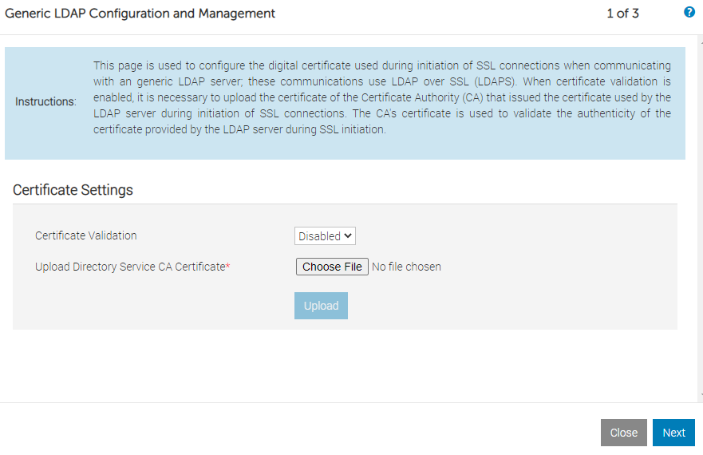
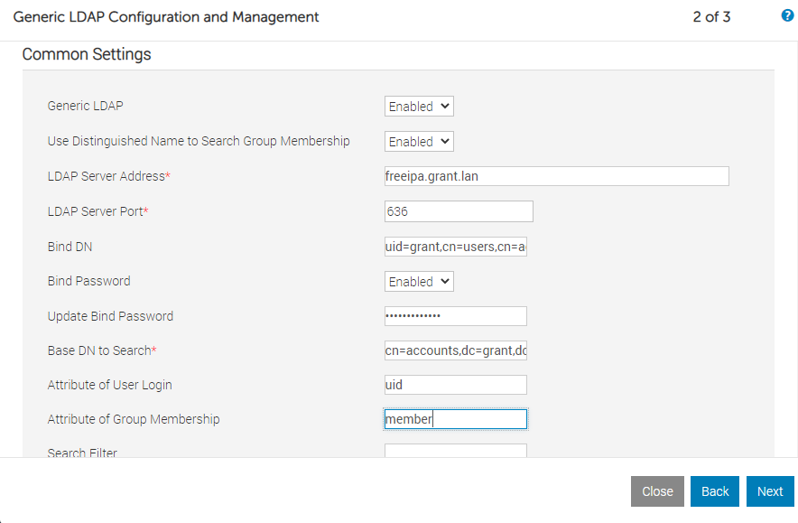

Configuring idrac with OpenLDAP
Setup OpenLDAP
I used osixia's openldap container for testing. I used osixia's phpLDAPadmin container for administration.
- Add an entry to your DNS server for
ldap.granttest.lan podman run -p 389:389 -p 636:636 --name my-openldap-container --env LDAP_TLS=false --env LDAP_LOG_LEVEL=8 --env LDAP_ORGANISATION="Grant Test" --env LDAP_DOMAIN="granttest.lan" --env LDAP_ADMIN_PASSWORD="admin" --detach osixia/openldap:1.5.0 --loglevel debug && podman run -p 6443:443 --env PHPLDAPADMIN_LDAP_HOSTS=ldap.granttest.lan --detach osixia/phpldapadmin:0.9.0-
Test the container:
podman exec my-openldap-container ldapsearch -x -H ldap://localhost -b dc=granttest,dc=lan -D "cn=admin,dc=granttest,dc=lan" -w admin. That should output:# extended LDIF # # LDAPv3 # base <dc=example,dc=org> with scope subtree # filter: (objectclass=*) # requesting: ALL # [...] # numResponses: 3 # numEntries: 2 -
Configure firewall:
firewall-cmd --add-port=389/tcp --permanent && firewall-cmd --add-port=636/tcp --permanent && firewall-cmd --add-port=6443/tcp --permanent && firewall-cmd --reload - Make sure you can log into
https://<YOUR_IP_ADDRESS>:6443with usernamecn=admin,dc=granttest,dc=lanand passwordadmin
Debugging
You can use podman inspect <container_name> and then search for Log to find the location of the logs.
Configure idrac
- I disabled certificates (yes I was lazy)
 
Stopped
For whatever reason the container networking never quite cooperated. Even though DNS entries were present for the external IP when either OME or idrac would try to hit it they would both say the LDAP server was unavailable. phpldapadmin worked without issue. I know it's a probably with the networking but decided it wasn't worth diving into so I abandonded this approach and went with a baremetal FreeIPA instance.